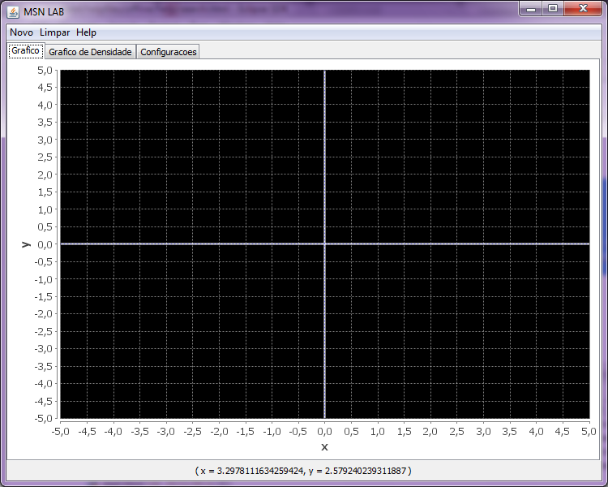
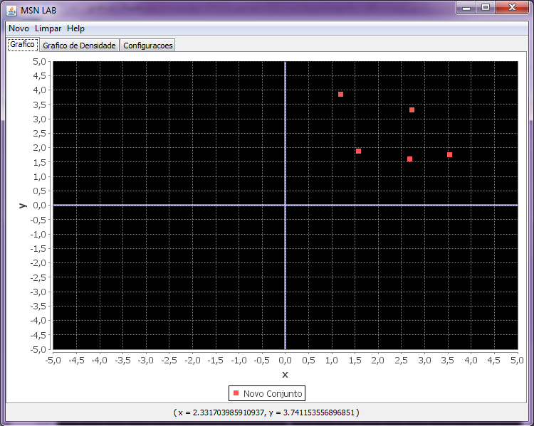

A utilização do grafico do MSN LAB4 é bastante trivial. É necessário, apenas, clicar no quadrante em que você gostaria de adicionar o ponto.

Clicando no primeiro quadrante, teremos um conjunto de pontos como podemos ver no gráfico abaixo.
